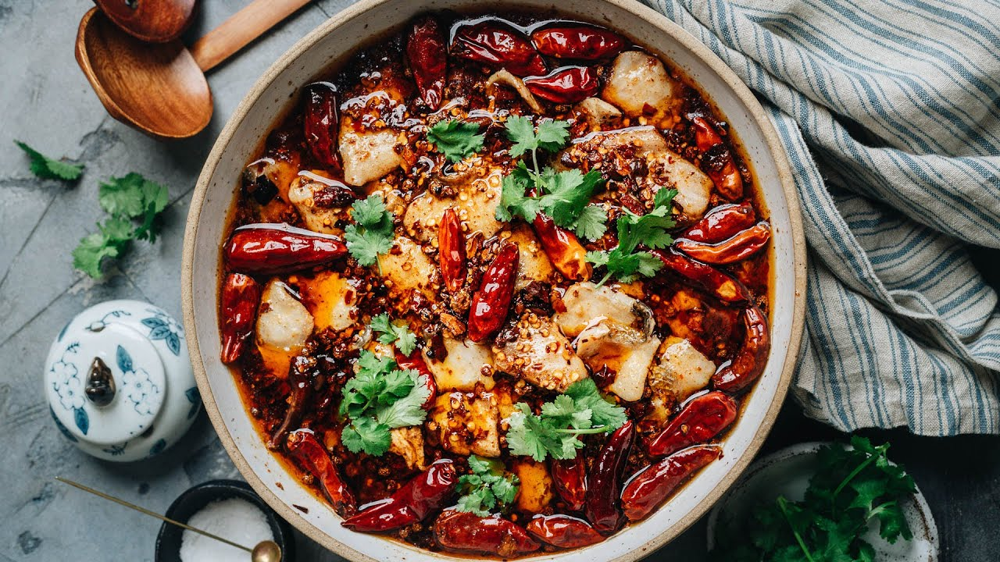
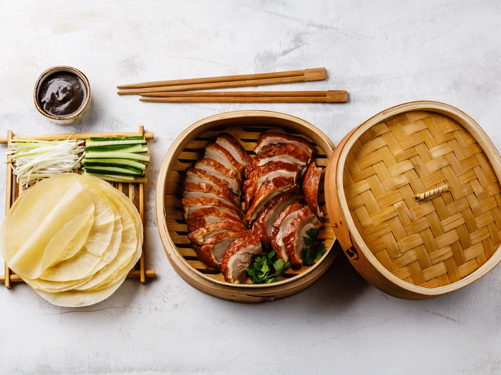

Hotpot

Hot pot or hotpot, a dish of soup/stock kept simmering in a pot by a heat source on the table, accompanied by an array of raw meats, vegetables and soy-based foods which diners quickly cook by dipping in broth.
Dumpling

A dumpling is a versatile dish of dough, often flour-based, wrapped around a savory or sweet filling (meat, veg, cheese) or served plain, cooked by boiling, steaming, or frying.
Szechuan boiled fish
Sichuan boiled fish, a dish from Sichuan province known for its numbing and spicy flavor. Despite its name, the fish is poached in a rich, aromatic broth and finished with a dramatic pour of sizzling hot oil that releases the fragrance of dried chilies and Sichuan peppercorns.
Peking Duck
Peking duck is a famous Chinese dish known for its crispy skin and succulent meat, traditionally served with thin pancakes, scallions, cucumber, and a sweet bean or plum sauce.